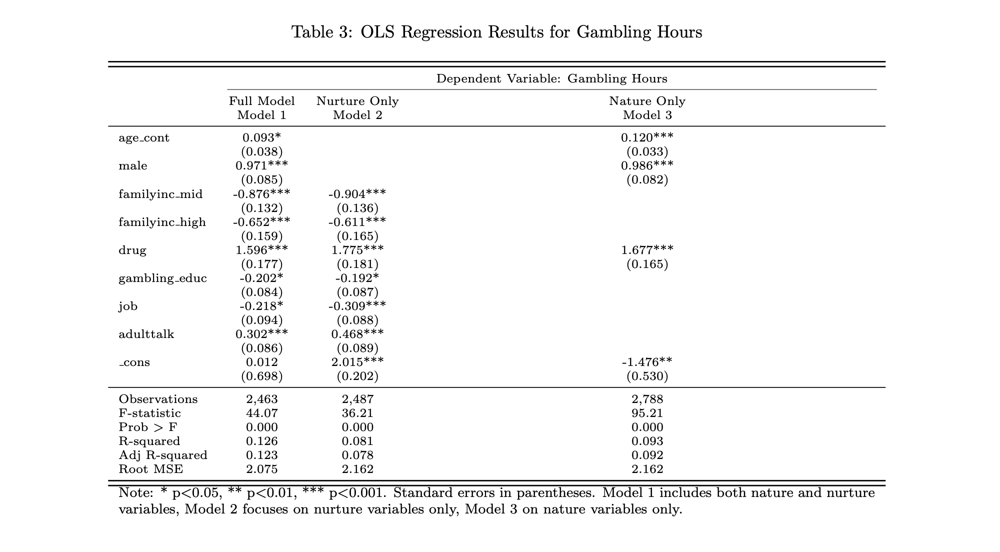
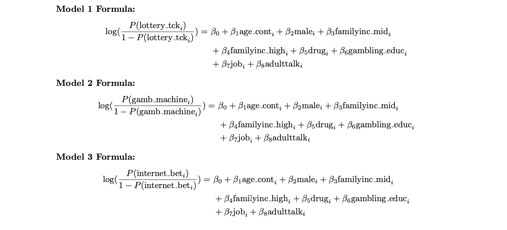

Exploring Gambling Behavior in High School Students
Project Overview
In this project, I examined how nature and nurture influence high school students’ likelihood to gamble. The findings have important policy implications, inform prevention programs, and help identify which student groups are linked to risky behaviors. The 2006 High School Risk Survey, the primary dataset used in this project, includes data from about 4,500 students across 10 Connecticut public high schools. It captures their attitudes toward risk and risky behaviors and represents the broader population of U.S. public high school students in 2006. Stata and Excel were used to analyze and visualize the data.
Analysis
The linear regression models focus on predicting the number of hours adolescents spend gambling per week. Model 2 looks specifically at environmental factors such as family income, gambling education, part-time job status, and exposure to adult gambling while controlling for drug use. The results show that teens from middle and high-income families tend to gamble less than those from lower-income families. Having a part-time job is also linked to reduced gambling hours. Exposure to adults talking about gambling is associated with increased gambling time. Drug use increases gambling hours and is included as a control to minimize omitted variable bias.
The following table summarizes regression results and reveals which model features are statistically significant:
Additionally, I created logistic regression models to determine the percentage changes in the odds of a gambling-related event happening given a change in the dependent variables. Gambling-related events were defined as (a) having purchased a lottery ticket, (b) having ued a slot machine, and (c) having placed an online bet. The models created are shown below:
The logit model reveals that family income’s effect on gambling behavior varies across models. In the first two models, the difference between high and low-income students is not statistically significant, with Model 2 showing a slight 2% increase in gambling odds for wealthier students, possibly due to greater disposable income. In Model 3, high family income becomes statistically significant, indicating its influence on specific gambling behaviors. Among nurture factors, being from a middle-income family significantly reduces the odds of gambling, while exposure to adults discussing gambling increases those odds. However, gender, representing a nature factor, consistently has the strongest impact across all models.
In our next stage of advanced analysis, we employed a two-stage least squares regression along with a likelihood ratio test to better identify causal effects and address potential endogeneity concerns. The instrument variable (IV) of family drug problems is theoretically correlated with student drug usage due to genetics, exposure, and access, satisfying the relevance condition. We assume family drug problems do not directly cause gambling issues, meeting the exclusion restriction and establishing the IV as exogenous. The first-stage LR-test yields an F statistic of 91.5, indicating family drug usage is a strong instrument. This IV estimates the local average treatment effect for students whose drug use is influenced by family drug problems. The coefficient of 3.18 suggests that, within this subgroup, students who use drugs gamble on average about 3.18 more hours per week than those who do not. Student drug usage is statistically significant with a p-value of 0.001, confirming this effect at the 95% confidence level.
Key Insights
These key findings provide important conclusions and reflections for educators and policymakers aiming to reduce adolescent gambling. A single classroom session on gambling risks reduces adolescent gambling by about 12 minutes per week, demonstrating that brief, evidence-based lessons in health classes can be effective. Adolescents who frequently overhear adults discussing gambling tend to gamble approximately 18 minutes more weekly, highlighting how casual adult conversations can unintentionally normalize gambling. There is also a strong link between substance use and gambling, with drug-using adolescents gambling about 1.6 hours more per week than their peers. Together, these results suggest that gambling prevention should be integrated into both school curricula and substance abuse programs to better support at-risk youth.
Tools & Methods
- Stata
- Statistical analysis
- Data visualization
- Multivariate linear regression
- Logistic regression
- Econometric analysis
Additional Contributors
- Shubham Mohole
- Danish Safdariyan